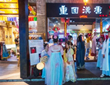

.png)
.png)
.png)
话题热帖
我国成都“最受欢迎”的古街：随处可见汉服美女，深得游客青睐！

成都最受欢迎的古街就应该是锦里了吧，来到这里旅过游的人都是很熟悉这里面的环境的， 大部分人要来到成都旅游的话，都要去这条古街看一看，因为这是成都的标志性景区， 每天都会有大量的游客来到这里逛一逛，这条古街里面不仅有着热情好客的当地人向我们推销着商品， 每天来到这里旅游的人真的很多，这么热闹的火箭你不想来看一看吗？ https://baijiahao.baidu.com/s?id=1661129742264858034&wfr=spider&for=pc
千山远黛荣登纳斯达克大屏，汉服国风燃爆纽约时代广场
.png)
在2019迈向2020年的之际,一批优秀的中国品牌紧跟祖国跨越发展的进程, 高起步迈向国际市场,借助此次跨年庆典的狂热,登陆位于美国纽约时代广场的纳斯达克大屏幕, 站在“世界的十字路口”让中国企业吸引全球的关注! 2020年,是我国全面建成小康社会的目标之年,一带一路为中国企业扩大了贸易开放的格局, 5G问世等科技进步加快了国民经济发展的步伐,而中国民营企业也在祖国繁荣的背景下不断升级、 创新、培育自身品牌,用实力逐渐崭露头角,并脱颖而出。在2020年到来之际, 千山远黛汉服品牌登陆了美国纽约时代广场的“世界第一屏”纳斯达克大屏,完成了贺新年展播, 向世界展现中国企业品牌的风采。http://hebei.ifeng.com/a/20200312/13917045_0.shtml
俄罗斯女孩试穿汉服超害羞，当她看镜头时，网友：谁顶得住？
游遍世界美景，品读百味人生！世界上有200多个国家和地区，不同地区都会有不一样的文化风俗， 在服装方面表现得淋漓尽致。众所周知，汉服是我国的传统服饰，凭借着自身独特的影响力， 逐渐流传到了世界各地，受到了越来越多人的喜爱，俄罗斯女孩试穿汉服超害羞，当她看镜头时，网友：谁顶得住？ 这究竟是怎么一回事呢？https://baijiahao.baidu.com/s?id=1661014094022383903&wfr=spider&for=pc
徐娇怕是我见过最爱汉服的女明星了吧！每次穿都这么有韵味
提起徐娇想必咱们一定会记得她的06年出道电影《长江七号》说真的，那个时候徐娇出演的时候大家都以为是个男生 当时只有9岁的徐娇更是凭借此电影拿下第28届香港电影金像奖最佳新人奖。今年的徐娇已经23岁了， 现在的人家那可是十足的清纯萌妹子呢，只是每次见到她基本上都是在穿着汉服。
热门话题
魏晋风 步摇 齐腰襦裙 璎珞 汉服研习 犊鼻裤 圆领袍衫 魏晋风 齐胸 冠服制度 楚服 马面裙 褙子 宋裤 明制长袄近期活动
.png)
.png)
.png)